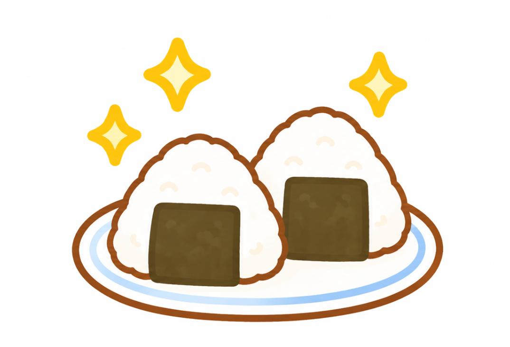

LET'S COOK!

0%
0 / 0 完了
TO DO! LET'S CHECK!
今日のタスク
きょうの気分は？
ONE MOMENT FOR ME気分を選んで記録できます。
YOUR LITTLE HISTORY
きろく
今月のチャレンジ
0%今月の達成率
今週の記録
気分の記録
PAST MOODSタスクアーカイブ
PAST TO DOHOMEから移動したタスクを保管します。戻すことも、完全に削除することもできます。
データのバックアップ
端末内に保存されます。定期的にJSONを書き出して保管してください。
TODAY'S TABLE
きょうのごはん
オムライス
準備前
料理の進み具合
今日のDAILY ROUTINE達成率に合わせて進みます。
MY RECIPE BOOK